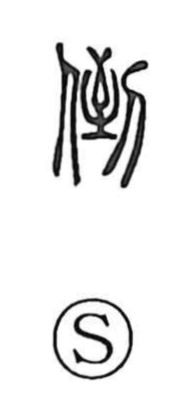

倒

Kun: taoreru, taosu | On: tou
to fall over ・ to topple ・ to knock down ・ to invert
Explanation
倒 combines 人, a person, with 到 as its sound element. 到 concerns reaching the spot where an arrow has landed. The arrow was shot to determine a place, and someone went to its point of arrival. 倒 names the return from that point—the movement reversed.
Turning back gives the sense of reversal or inversion. From an upright position being overturned come ‘fall over,’ ‘knock down,’ and ‘turn upside down.’ The person added at the left makes the movement explicit, while 到 preserves the arrival from which the return begins.